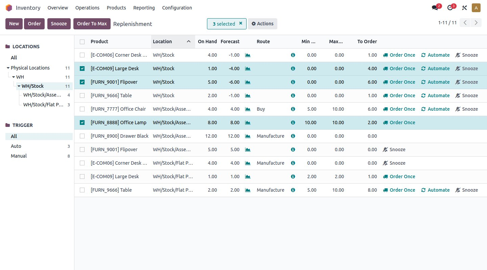
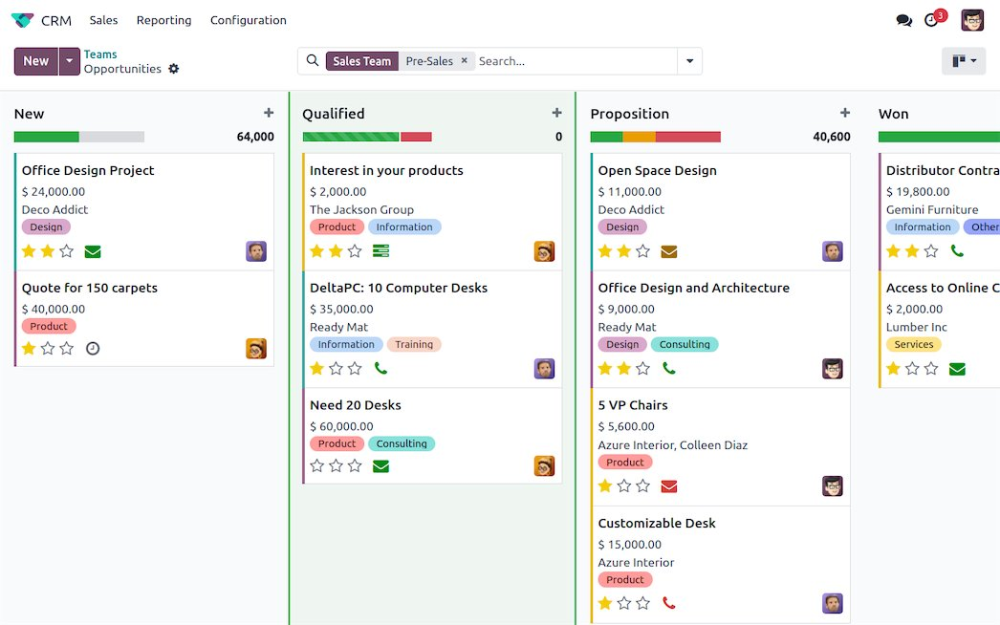
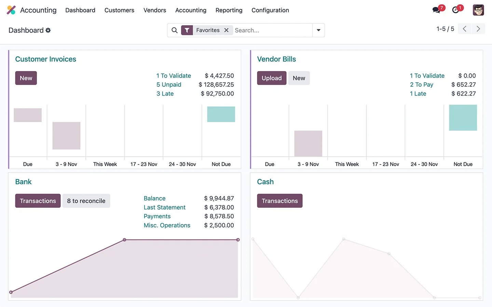

Services — ERP
Odoo
One system for the whole operation — implemented the grown-up way, so your team actually uses it.
Odoo is the Swiss Army knife of business software: CRM, accounting, inventory, manufacturing, ecommerce, project management, HR — dozens of apps on one platform, sharing one database. For a growing SMB, that’s the dream: stop paying for twelve disconnected subscriptions, stop retyping the same data into four systems, and run the business from one place.
But here’s the part the Odoo website won’t tell you: the software is the easy part. The implementation is where projects live or die — scoping discipline, clean data, training that sticks, and resisting the urge to customize everything on day one. I’ve written about the traps at length (7 things nobody tells you before you start). When you implement Odoo with me, you get the guy who’s already mapped the minefield.
I implement Odoo through Quaint Business Solutions, where I’m Head of Sales — a boutique ERP consulting firm focused on US small and midsize businesses. And because I also implement SAP Business One, I’ll tell you straight if Odoo isn’t the right call for you. Start with independent ERP selection consulting if you’re still deciding.
Odoo is also the zestiest ERP in the room — and I mean that as a compliment. The platform ships new apps and improvements constantly, the community is enormous, and the pace of innovation embarrasses software costing ten times as much. That energy is exactly why growing companies love it — and exactly why you want a steady hand on the implementation. Fast-moving software plus disciplined delivery is the combination that wins.
Does this sound familiar?
You’re paying for a dozen apps that don’t talk to each other. CRM here, accounting there, inventory living in a spreadsheet, shipping labels in another tab — and your team burns hours every week retyping the same information and arguing about which system has the right number. I collapse the sprawl onto Odoo’s single database: enter it once, and it flows everywhere it belongs. The subscription savings are real, but the labor savings are the real prize.
You’ve outgrown QuickBooks and month-end proves it. Close takes two weeks, inventory is a rumor, and every report needs a footnote explaining why the numbers don’t tie. That’s the classic Odoo moment — and I scope the move around how your business actually runs, not around a software demo. Financials and operations first, in phases your team can absorb.
Somebody already tried Odoo and it went sideways. Usually that means somebody installed it, clicked around, and declared victory before the hard parts — data migration, process design, training — ever happened. Failed Odoo projects are failed projects, not failed software. I assess what’s salvageable, stabilize what’s live, and rebuild the plan with the discipline the first attempt skipped.
Your last partner customized everything and now you can’t upgrade. This is the most expensive sentence in ERP: “we’ll just tweak the code a little.” A heavily customized Odoo becomes un-upgradeable, un-supportable, and permanently married to the partner who built it. My rule is configuration first, customization last — and when custom work is genuinely needed, it’s built to survive upgrades.
Nobody uses the system you already paid for. Shelfware happens when the software was designed around the demo instead of the people doing the work. I build around your team’s real workflows, train role by role until it sticks, and stay through go-live until the new way is just the way. Adoption isn’t a training problem — it’s a design problem, and I design for it from day one.

Is Odoo the right ERP for your business?
Growing SMBs that want one flexible system covering the whole operation — typically companies outgrowing QuickBooks and a pile of disconnected SaaS tools. Odoo shines when you need breadth (many functions, one database) and value (serious capability without enterprise license shock). It fits businesses willing to adapt some processes to the software — the companies that try to bend Odoo into their exact old workflows are the ones that end up in my customization-vs-configuration cautionary tales.
And the honest inverse: Odoo is not for companies that need deep financial controls and audit-grade inventory discipline on day one — that’s SAP Business One territory. It’s also not for teams that refuse to change a single process. If every workflow is sacred and non-negotiable, no ERP will save you — and I’d rather tell you that now than bill you to learn it later.
How much does Odoo really cost?
The direct answer: less than you fear for the software, more than you hope for the project — and anyone who quotes you a single number without scoping is guessing. Odoo’s license cost is genuinely a fraction of traditional ERP; that’s real, and it’s a big part of the appeal. But the software is the smallest bucket. The real budget is implementation: scoping, data migration, configuration, training, and go-live support. That’s true of every ERP on earth, and Odoo is no exception — the vendors who pretend otherwise are the ones whose projects end up in my rescue queue.
What I do differently: we build honest total-cost math before anyone signs anything — software, services, data work, training, and the internal time your team will invest. No lowball quote designed to win the deal and explode later. The cheapest Odoo quote is almost never the cheapest Odoo project, and I’ll show you exactly why on the call.
Odoo Community vs. Enterprise: which do you need?
Short version: Community is free and open-source but deliberately limited — fewer apps, no Studio customization tool, and you’re on your own for hosting and upgrades. Enterprise (hosted on Odoo.sh or Odoo Online) unlocks the full app library, the upgrade path, and official support. For a real business running real operations, Enterprise is almost always the right call — the license cost is small next to the cost of fighting Community’s limits with custom code. If a partner pitches you Community to make the quote look cheaper, ask them who pays for the workarounds. Then call me.
What “the grown-up way” actually means
It’s a process, not a slogan. Fit first: an honest assessment of whether Odoo matches your business before anyone signs anything — including telling you no. Scope locked early: your real processes mapped and agreed, so the project has edges. Phased delivery: financials and operations first, everything else in waves, so value starts flowing before the whole thing is done. Clean data: migrated, validated, and tested before go-live — because garbage in doesn’t just mean garbage out, it means nobody trusts the system on day one. Training that sticks: role by role, on your data, until people can do their jobs without a cheat sheet. And we stay: go-live support and post-live optimization, because the system should keep getting better after launch, not slowly rot.

What’s included
- Fit assessment: honest answer on whether Odoo matches your business — before anyone signs anything
- Scoping built around your real processes, not a template
- Phased implementation: core financials and operations first, the rest in waves
- Data migration done right — clean, validated, and tested before go-live
- Training your team will actually retain, role by role
- Go-live support and post-live optimization — we don’t disappear after launch

Further reading
- Odoo Implementation: 7 Things Nobody Tells You Before You Start
- You’re Paying for 12 Apps. Odoo Replaces All of Them.
Official Odoo resources (straight from the vendor):
- Odoo official documentation
- Odoo CRM product tour
- Odoo Accounting product tour
- Odoo Inventory product tour
Want to kick the tires first? Start a free 15-day Odoo trial — no credit card, no commitment.
FAQ
Is Odoo really free?
The community edition is open-source; the hosted Online and the full-featured Enterprise (ODOO.sh / on-premise) versions are paid. Most serious SMB implementations run on the paid tiers for the full app set and support. The software cost is still a fraction of traditional ERP — but budget honestly for implementation, which is where the real money goes on any ERP project.
How long does an Odoo implementation take?
Depends on scope, but a focused SMB implementation typically runs in months, not weeks. The timeline killers are fuzzy scope, dirty data, and endless customization requests — which is exactly why we lock scope early and phase the rest. Anyone promising a full ERP in two weeks is selling you a fantasy.
Odoo vs. SAP Business One — how do I choose?
Short version: Odoo tends to win on breadth-per-dollar and flexibility for growing SMBs; SAP Business One tends to win on financial depth and inventory discipline. The real answer depends on your processes, your industry, and your growth plans — which is what selection consulting is for. I implement both, so I have no horse in the race except yours.
Can you rescue a failed Odoo implementation?
Often, yes. Failed Odoo projects are usually failed projects, not failed software — bad scoping, no data discipline, no training. We assess what’s salvageable, stabilize what’s live, and rebuild the plan. Bring me the mess; I’ve seen worse.
What does an Odoo implementation timeline look like, phase by phase?
Phase one is fit and scoping — we map your processes and lock what’s in and out. Phase two is build: configuration, data migration, and testing, with you validating against your real workflows. Phase three is training, role by role. Phase four is go-live with support standing by, then optimization waves for everything we deliberately deferred. A focused SMB implementation runs in months, not weeks — and the phasing is what keeps it from eating your business alive while it happens.
Do you host Odoo on Odoo.sh, on-premise, or Odoo Online?
Depends on what you need. Odoo Online is the simplest — SaaS, managed, fastest to start. Odoo.sh adds staging branches and room for custom modules, which growing operations usually want. On-premise makes sense when you have specific infrastructure or compliance reasons. We pick the hosting model during scoping based on your technical reality, not my preference — and we make sure the choice still makes sense in three years, not just three months.
One system. Done right. Used daily.
Thirty minutes. I’ll tell you if Odoo fits — and if it doesn’t, what does.
Book a free consult